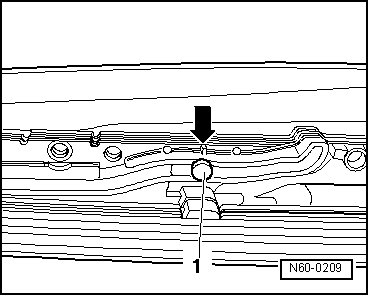
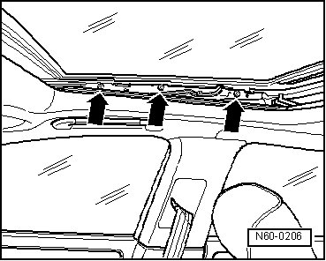
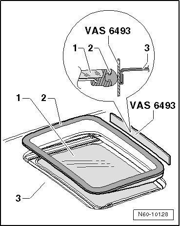

Sunroof With Solar Panel
Sunroof with Solar Panel
Sunroof Solar Panel
The panel must be installed in the neutral position (panel closed).
Neutral position:
Guide pin must align with marking - arrow - on left and right guide rails.

If this is not the case, adjust parallel movement. Refer to --> [ Solar Panel, Adjusting Parallel Movement ] Sunroof with Solar Panel Overview
- Insert the sunroof panel from above and install the rail/panel mounting bolts - arrows -.

- Lightly tighten the bolts.
- Insert the adjusting strip (VAS 6493) between the roof - 3 - and the sunroof panel seal - 2 -.

- Tighten the screws to 4.5 Nm.
• Tighten mounting bolts to 4.5 Nm after panel height adjustment.